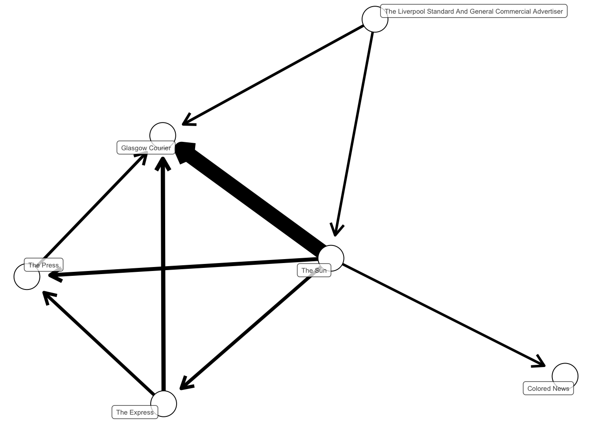
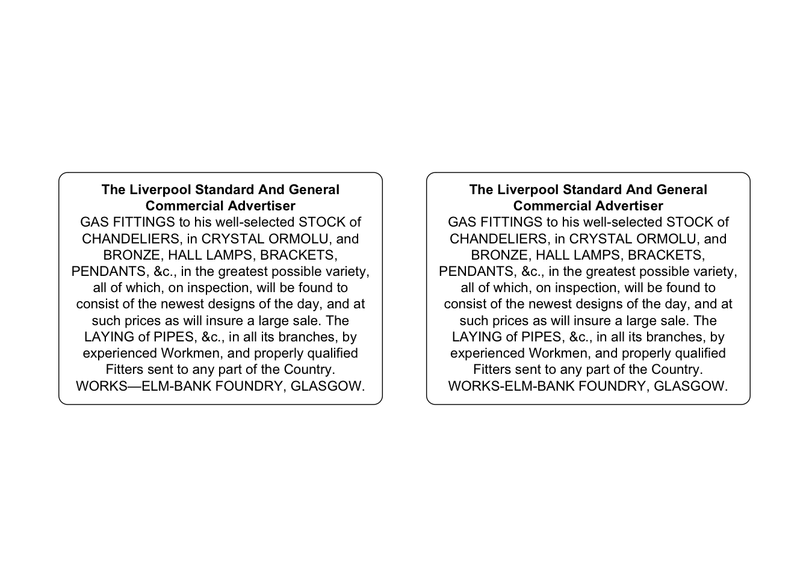
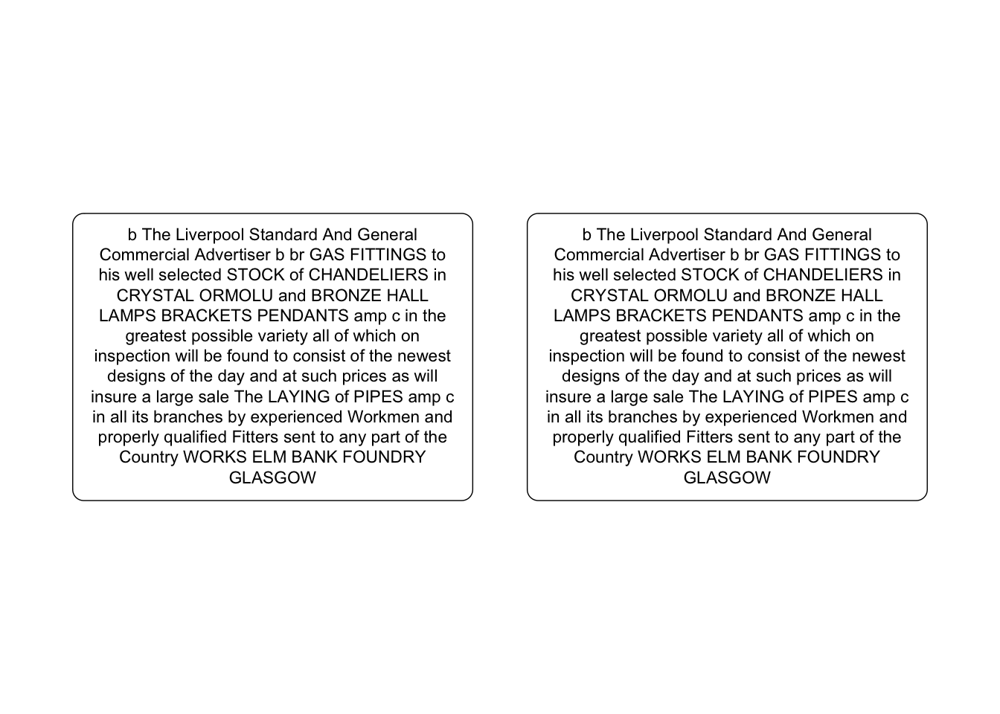

install.packages('tidyverse')
install.packages('textreuse')
install.packages('data.table')
install.packages('ggtext')14 Text Reuse
Nineteenth-century newspapers shared text all the time. Sometimes this took the form of credited reports from other titles. For much of the century, newspapers paid the post office to give them a copy of all other titles. Official reused dispatches were not the only way text was reused: advertisements, of course, were placed in multiple titles at the same time, and editors were happy to use snippets, jokes, and so forth
Detecting the extent of this reuse is a great use of digital tools. R has a library, textreuse, which allows you to do this reasonably simply. It was intended to be used for plagiarism detection and to find duplicated documents, but it can also be repurposed to find shared articles.
Many interesting projects using newspaper data have used text reuse detection. The Oceanic Exchanges project is a multi-partner project using various methods to detect this overlap. This methods paper is really interesting, and used a similar starting point, though it then does an extra step of calculating ‘local alignment’ with each candidate pair, to improve the accuracy. (Smith, Cordell, and Mullen 2015)
Melodee Beals’s Scissors and Paste project, at Loughborough and also part of Oceanic Exchanges, also looks at text reuse in 19th century British newspapers. Another project, looking at Finnish newspapers, used a technique usually used to detect protein strains to find clusters of text reuse on particularly inaccurate OCR. (inproceedings-salmi?; inproceedings-blast?)
Find reused text with the package textreuse
There are many methods by which reused text can be found. Usually these involve finding overlapping chunks of text. It is complicated when the OCR is not perfect - it’s very unlikely that long strings of exactly the same text will be found, because of small differences. One package to do this in R is the textreuse package.
In this chapter, we’ll demonstrate how to use this package and view and interpret the results from a sample of newspaper issues covering a single month.
Background
For this tutorial, we’ll use a subset of the 1855 newspaper text data, taken from the Shared Research Repository. In 1855, despite the invention and spread of the telegraph, much of the circulation of news from London to regional hubs relied on the copies of newspapers or reports travelling by railway. News from overseas might arrive first in London where it was printed in papers there, and then sent onwards via the next train to Liverpool, Edinburgh, and so forth. This was particularly true of non-urgent or timely reports.
Computationally detecting text reuse will show some of this pattern, and is a way of understanding more about the circulation of news. By looking at the source newspapers for text printed in regional papers, we can get an idea of the patterns of news flow from one place to another. The results will show a variety of reuse: not just reused articles, but repeated advertisements, and quotations from third parties.
Method
The textreuse package expects a corpus in the form of a folder of text documents. To get the data in this format, the first step is to take the dataframe of articles we have been using throughout the book, filter to a single month, and export the text each article to a separate text document, in a new folder.
Following this, we’ll use functions from the textreuse package to generate a datasetset of pairs of articles and a similarity score.
The final step is to merge this set of similarity scores with the text and metadata of the newspaper articles, so we can explore, read, and visualise the results.
Load necessary libraries
As in previous chapters, the first step is to load the libraries used throughout the tutorial If they are not installed, you can do so using the following:
library(tidyverse)
library(textreuse)
library(data.table)
library(ggtext)Load the dataframe and preprocess
In the extract text chapter @ref(label), you created a dataframe, with one row per article. The first step is to reload that dataframe into memory, and do some minor preprocessing.
Combine Newspaper Articles into One Dataframe
As in previous chapters, either construct your own corpus by following Chapter 8 and Chapter 9, or download and open the ready-made .zip file with all issues from 1855. Next, get these articles into the correct format. See Chapter 10 for an explanation of this code:
news_sample_dataframe = list.files(path = "newspaper_text/",
pattern = "csv",
recursive = TRUE,
full.names = TRUE)
all_files = lapply(news_sample_dataframe, data.table::fread)
names(all_files) = news_sample_dataframe
all_files_df = data.table::rbindlist(all_files, idcol = 'filename')
title_names_df = tibble(newspaper_id = c('0002090', '0002194', '0002244', '0002642', '0002645', '0003089', '0002977'), newspaper_title = c('The Liverpool Standard And General Commercial Advertiser', 'The Sun', 'Colored News', 'The Express', 'The Press', 'Glasgow Courier', 'Swansea and Glamorgan Herald'))
news_df = all_files_df %>%
mutate(filename = basename(filename))
news_df = news_df %>%
separate(filename,
into = c('newspaper_id', 'date'), sep = "_") %>% # separate the filename into two columns
mutate(date = str_remove(date, "\\.csv")) %>% # remove .csv from the new data column
select(newspaper_id, date, art, text) %>%
mutate(date = ymd(date)) %>% # turn the date column into date format
mutate(article_code = 1:n()) %>% # give every article a unique code
select(article_code, everything()) %>% # select all columns but with the article code first
left_join(title_names_df, by = 'newspaper_id') # join the titles Add a unique article code to be used in the text files
Make a more useful code to use as an article ID. First use str_pad() to add leading zeros up to a maximum of three digits.
news_df$article_code = str_pad(news_df$article_code,
width = 3,
pad = '0')Use paste0() to add the prefix ‘article’ to this number.
news_df$article_code = paste0('article_',
news_df$article_code)Filter to a single month
Let’s limit the newspapers to articles from a single month. When text is being reused in newspapers, it would be reasonable to assume that it is more likely that the reusing text will do so shortly after the source was originally published. Comparing all the articles for a single month may be a good way to pick up some interesting reuse.
Use filter() to restrict the data to a single month, and save this as a new object:
sample_for_text_reuse = news_df %>%
mutate(month = as.character(cut(date, 'month'))) %>%
filter(month == '1855-09-01')Export each article as a separate text file
The code below loops over each row in the news_sample_dataframe, writes the fifth cell (which is where the text of the article is stored) to a text file, using a function from a library called data.table called fwrite(), stores it in a folder called textfiles/, and makes a filename from the article code concatenated with ‘.txt’.
Before you do this, create an empty folder first, in the project directory, called textfiles
Once this has finished running, you should have a folder in the project folder called textfiles, with a text document for each article within it.
for(i in 1:nrow(sample_for_text_reuse)){
filename = paste0("textfiles/", sample_for_text_reuse[i,1],".txt")
writeLines(sample_for_text_reuse[i,5],con = filename)
}Load the files as a TextReuseCorpus
After this, we’ll import the files in this textfiles folder, and store them as an object from the textreuse package: a TextReuseCorpus.
Generate a minhash
The textreuse package uses minhashes to more efficiently store and compare the text documents (more information here). Before we generate the TextReuseCorpus, use the minhash_generator to specify the number of minhashes you want to represent each document. Set a random seed to make it reproducible:
minhash <- minhash_generator(n = 200, seed = 1234)Create the TextReuseCorpus
Next, create the TextReuseCorpus
The function TextReuseCorpus() expects a number of parameters:
dir = is the directory where all the text files are stored.
tokenizer is the function which tokenises the text. Here we’ve used tokenize_ngrams, but you could use characters, or build your own.
n sets the length of the ngrams for the tokenizer. n = 2 means the documents will be split into bigrams (sequences of two tokens).
minhash_func = is the parameters set using minhash_generator() above.
keep_tokens = Whether or not you keep the actual tokens, or just the hashes. There’s no real point keeping the tokens as we use the hashes to make the comparisons.
This function can take a long time to run with a large number of documents.
reusecorpus <- TextReuseCorpus(dir = "textfiles/",
tokenizer = tokenize_ngrams,
n = 2,
minhash_func = minhash,
keep_tokens = FALSE,
progress = FALSE)Now each document is represented by a series of hashes, which are substitutes for small sequences of text. For example, this is the first ten minhashes for the first article:
head(minhashes(reusecorpus[[1]]),10) [1] -1509664909 -1764812607 -1837533555 -1776955188 -1785365283 -1551982906
[7] -1409803751 -2137549872 -1559991213 -2094002709At this point, you could compare any single document’s sequences of hashes to any other, and get its Jacquard Similarity score, which counts the number of shared hashes in the documents. The more shared hashes, the higher the similarity.
To do this over the entire corpus more efficiently, a local Sensitivity Hashing algorithm is used to solve this problem. This groups the representations together, and finds pairs of documents that should be compared for similarity. More details can be found here:
LSH breaks the minhashes into a series of bands comprised of rows. For example, 200 minhashes might broken into 50 bands of 4 rows each. Each band is hashed to a bucket. If two documents have the exact same minhashes in a band, they will be hashed to the same bucket, and so will be considered candidate pairs. Each pair of documents has as many chances to be considered a candidate as their are bands, and the fewer rows there are in each band, the more likely it is that each document will match another.
The first step in this is to create the buckets. You can try other values for the bands.
buckets <- lsh(reusecorpus, bands = 50, progress = FALSE)Warning: `gather_()` was deprecated in tidyr 1.2.0.
ℹ Please use `gather()` instead.
ℹ The deprecated feature was likely used in the textreuse package.
Please report the issue at <https://github.com/ropensci/textreuse/issues>.Next, use lsh_candidates() to compare each bucket, and generate a list of candidates.
candidates <- lsh_candidates(buckets)Next, go back to the full corpus, and calculate the similarity score for these pairs, using lsh_compare(). The first argument is the candidates, the second is the full corpus, the third is the method (other similarity functions could be used). The output (the first 10 lines are below this code) is a dataframe with three columns, one for each pair of matched documents: the first two columns store the unique IDs for the documents, and the last the similarity score.
jacsimilarity_both = lsh_compare(candidates,
reusecorpus,
jaccard_similarity,
progress = FALSE) %>%
arrange(desc(score))
jacsimilarity_both %>% head(10) %>% kableExtra::kbl()| a | b | score |
|---|---|---|
| article_3092 | article_3249 | 1 |
| article_3092 | article_3291 | 1 |
| article_3092 | article_3321 | 1 |
| article_3092 | article_3369 | 1 |
| article_3092 | article_3393 | 1 |
| article_3092 | article_3407 | 1 |
| article_3092 | article_3533 | 1 |
| article_3092 | article_3666 | 1 |
| article_3092 | article_3706 | 1 |
| article_3092 | article_3711 | 1 |
In order to see what this means in practice, there are a few more data wrangling steps to carry out.
Firstly, we’ll merge the matches dataframe to the original sample of articles, using the article code. This means we can see the text and the metadata (the date and newspaper source) for each pair of articles. We can use this information to clean the data and get some more meaningful pairs.
The method compares all articles against all other articles, meaning articles from the same newspapers are compared to each other. It also doesn’t have a minimum length, so sometimes very short articles (often just a few letters or punctuation marks, because of OCR and segmentation errors) will be matched with a very high score. We then select just the relevant columns, and filter out those where both documents are from the same newspaper.
matchedtexts = jacsimilarity_both %>%
left_join(sample_for_text_reuse, by = c('a' = 'article_code')) %>%
left_join(sample_for_text_reuse, by = c('b' = 'article_code')) %>%
select(a,b,score, text.x, text.y, newspaper_id.x, newspaper_id.y, date.x, date.y, newspaper_title.x, newspaper_title.y) %>%
filter(!is.na(newspaper_id.x)) %>%
mutate(count = str_count(text.x)) %>%
filter(count>500) %>%
mutate(text.x = paste0("<b>",newspaper_title.x, "</b><br>", text.x))%>%
mutate(text.y = paste0("<b>",newspaper_title.y, "</b><br>", text.y))The resulting file is a dataframe of every matched pair, including the titles and dates.
Analysis of the results
As a first step in understanding what exactly has been found, we could take a ‘bird’s eye’ view of the patterns of reuse. If we filter to just include matches with high overlap, and then organise the data so that we only look at matches where one is published at least a day later than the other. With this, we can assume that one text is the ‘source’ text for an article published by the other.
This can be visualised using network analysis software. We’ll count the total reuse from one title to another. Each title will be treated as a ‘node’ in a network, and the amount of reuse, going from older to newer, can be visualised as a link, with an arrow pointing from the amount of reuse from the source to the ‘target’. The thickness of the line will be mapped to the volume of reused text. We’ll also filter so that only reuse with a similarity score of at least .3 is considered.

Looking at the visualisation, one particularly clear pattern seems to be the reusing of text from The Sun in the Glasgow Courier.
In order to compare the two versions, we’ll isolate a single pair, and use ggplot2 to render it in a nicely-formatted text box.
data = matchedtexts %>%
slice(1) %>%
pivot_longer(cols = c(text.x, text.y)) %>%
mutate(value = str_trunc(value, 1000))This code, using the package ggtext, will display the two articles side-by-side:
# Create the plot
ggplot(data, aes(x = name, y = 1, label = value)) +
geom_textbox(width = 0.4,
box.padding = unit(0.5, "lines"), halign = 0.5, size = 3) +
coord_cartesian(ylim = c(0, 2)) +
theme_void()
We can see that these two texts are indeed the same, with some small differences attributable to OCR errors.
Check Local Alignment
To check the specific overlap of two documents, use another function from textreuse to check the ‘local alignment’. This is like comparing two documents in Microsoft Word: it finds the bit of the text with the most overlap, and it points out where in this overlap there are different words, replacing them with ######
First turn the text in each cell into a string:
a = paste(matchedtexts$text.x[1], sep="", collapse="")
b = paste(matchedtexts$text.y[1], sep="", collapse="")Call the align_local() function, giving it the two strings to compare.
aligned = align_local(a, b)As before, we can use ggplot2 to render the result so that it is easier to read:
aligned_df = tibble(texts = c(aligned$a_edits, aligned$b_edits)) %>%
mutate(texts = str_trunc(texts, 1000)) %>%
mutate(name = c('The Sun', 'Glasgow Courier'))
# Create the plot
ggplot(aligned_df, aes(x = name, y = 1, label = texts)) +
geom_textbox(width = 0.4,
box.padding = unit(0.5, "lines"), halign = 0.5, size = 3) +
coord_cartesian(ylim = c(0, 2)) +
theme_void()
Next steps
Text reuse is complex, because ultimately it is difficult to know whether is is ‘genuine’ text reuse, or something else such as reuse from a third party, boilerplate text, commonplaces, or famous quotations. In the above example, it’s likely that the true pattern is that The Sun published this news in London along with many other titles at the same time, and the Glasgow Courier may have picked it up from any of them. Perhaps even more so than with other forms of text analysis, you’ll want to really understand the sources and do close reading to fully understand the results.
You should experiment with the parameters, mostly the n parameter in the minihash generator, the n in the tokenizer, and the bands in the candidates function.
Further reading
David A. Smith and others, Computational Methods for Uncovering Reprinted Texts in Antebellum Newspapers, American Literary History, Volume 27, Issue 3, Fall 2015, Pages E1–E15, https://doi.org/10.1093/alh/ajv029
Ryan Cordell, Reprinting, Circulation, and the Network Author in Antebellum Newspapers, American Literary History, Volume 27, Issue 3, Fall 2015, Pages 417–445, https://doi.org/10.1093/alh/ajv028